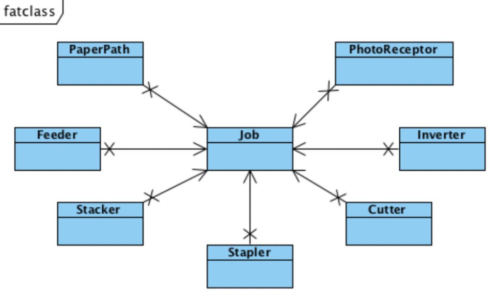
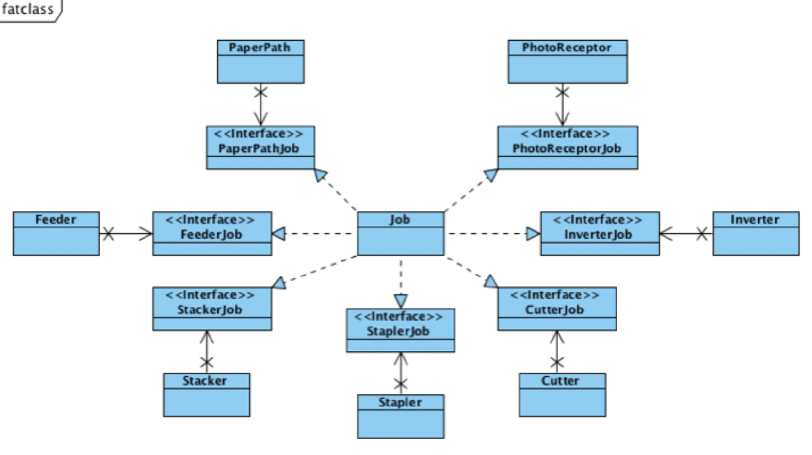
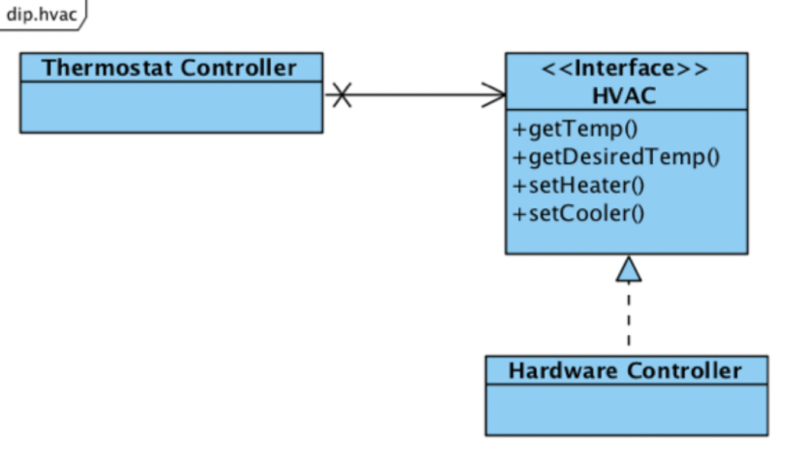

들어가면서
- 해당 포스트는 백명석님의 클린 코더스 강의를 정리한 내용입니다.
- 강의 자료는 깃 허브에서 보실 수 있습니다.
클린 코더스 강의 14.3. ISP(Interface Segregation Principle)
Don’t depend on things that you don’t need
사용하지 않는 인터페이스에 대해 의존성을 가지고 있다면 그 인터페이스가 변결될 때마다 함께 재컴파일/빌드/배포되어야 한다. 사용하지 않는 인터페이스때문에 독립적인 개발/배포가 불가해진다는 의미이다.
이는 한 기능에 변경이 발생하면 다른 기능을 사용하는 클라이언트들에게도 영향을 끼치기 때문에 SRP와도 연관된다.
따라서 사용하는 기능만 제공하도록 인터페이스를 분리함으로써 한 기능에 대한 변경의 여파를 최소화해야 하며, ISP는 클라이언트 입장에서 인터페이스를 분리하라는 원칙이다.
Switch 예제
switch가 activate되면 light를 turn on하는 SW를 설계하라.


1
2
3
4
5
6
7
8
9
10
11
public class Switch{
private Light light;
public Switch(Light light){
this.light = light;
}
public void activate(){
light.turnOn();
}
}
여기서 문제점은 Switch가 Light에 의존적이라는 점이다. Switch가 Light뿐 아니라 Fan, Motor등을 turnOn할 수 있다면 Switch는 Light에 대해 너무 자세히 알면 안된다.

이를 해결하기 위해서 Switch는 Light에 대해 의존성을 갖지 않도록 Switchable 인터페이스를 바라보도록 변경한다.
이 때 Switchable(인터페이스)은 Switch(클라이언트)와 같은 패키지/배포 단위에 속하며, 구현체(Light)와는 관련이 없기때문에 인터페이스의 이름은 클라이언트와 연관된 것이어야 한다.
Fat class 예제

이 예제에서는 Job 클래스가 많은 일을 하고 있어서 많은 Fan-in이 발생한다.
각 서브 시스템은 서로 다른 이유로 Job에 의존하기 때문에 하나의 시스템이라도 변경되면 Job 클래스는 리컴파일된다. 또한 이 과정에서 Job 클래스에 변경이 발생하면 Job 클래스를 사용하는 모든 클래스에 변경이 일어나야 한다.
따라서 rebuild에 많은 시간이 소요되고, 독립적인 배포/개발이 불가능하다.

해결책으로 One interface for a sub system으로 구성한다.
이렇게되면 어떤 인터페이스에 변경이 발생해도 Job 클래스와 해당 인터페이스를 사용하는 서브 시스템만 rebuild하면 된다.
Fat class를 만나면
- interface를 생성해서 Fat class를 다수의 클라이언트로부터 isolate 시켜야 한다.
- interface는 구현체보다 클라이언트와 논리적으로 결합되므로, 클라이언트가 호출하는 매소드만 interface에 정의되었다는 것을 확신할 수 있어 ISP를 준수한다.
- 특정 interface의 변경으로 인해 다른 클라이언트가 영향을 받는 것을 없앴다.
- 이로인해, 재컴파일/재배포를 없애고
- 클라이언트들을 다른 독립된 컴포넌트에 배치할 수 있고 (클라이언트 + interface가 배치 단위)
- 독립적으로 개발/배포 가능하게 되었다.
클린 코더스 강의 15.1. DIP(Dependency Inversion Principle)
Dependency Inversion Principle
High Level Policy should not depend on Low Level Details
둘은 Abstract Type에 의존해야 한다.
Object Oriented의 핵심
Inheritance, Encapsulation, Polymorphism은 객체지향의 핵심이 아니라 주요 메커니즘이다.
객체지향의 핵심은 IoC를 통해 상위 레벨의 모듈을 하위 레벨의 모듈로부터 보호하는 것이다. OCP를 통해 새로운 요구사항을 반영할 수 있다.
따라서 객체지향 설계는 dependency management가 중요하다.
Plugins

어떤 시스템에서 시스템이 사용하는 변경가능한 부분을 플러그인이라고 한다. 이때 시스템은 어떤 플러그인이 호출될지 모른채 호출한다. Plug Point 인터페이스를 구현하는 것 중에서 Plugin을 갈아끼울 수 있으며 이런 Plugin들이 시스템의 Boundary를 정의한다.
의존성 역전을 통해 SW 모듈간의 Boundary를 만들 수 있으며, Boundary를 교차하는 의존성의 방향은 반드시 하나여야만 한다. 위의 예시에서 윗 부분은 Application Layer, 아랫 부분은 Web Layer/Database Layer등이 될 수 있다.
The Furnace Example
벽에 있는 Thermostat(온도조절 장치)을 제어하는 SW를 개발해야 한다고 가정해보자.

Hardware는 2개의 input과 2개의 output을 갖는 장치이다.
1
2
3
4
5
6
7
8
9
10
11
12
13
14
15
16
17
18
19
20
void regulate(){
int goal_t, t;
while(1){
sleep(ONE_MINUTE);
goal_t = in(0x02);
t = in(0x01);
if(t < goal_t){
out(0x03, true);
out(0x04, false);
}
else if(t > goal_t){
out(0x03, false);
out(0x04, true);
}
else{
out(0x03, false);
out(0x04, false);
}
}
}
high level 알고리즘이 low level detail인 Hardwware에 의존하고 있어서 이 SW는 다른 디바이스와 사용될 수 없고, DIP를 위반한다.
DIP에 순응하도록 변경하려면 HVAC라는 인터페이스를 생성한 뒤, 필요한 함수들을 정의한다.

1
2
3
4
5
6
7
8
9
10
11
12
13
14
15
16
17
18
19
20
void regulate(Hvac hvac){
int goal_t, t;
while(1){
sleep(ONE_MINUTE);
goal_t = hvac.getDesiredTemp();
t = hvac.getTemp();
if(t < goal_t){
hvac.setHeater(true);
hvac.setCooler(false);
}
else if(t > goal_t){
hvac.setHeater(false);
hvac.setCooler(true);
}
else{
hvac.setHeater(false);
hvac.setCooler(false);
}
}
}
OCP vs DIP
위 코드가 변경되는 과정을 보면 OCP를 지키는 것과 다를 바가 없어 보인다.
이렇게 OCP와 DIP는 비슷해보이지만 그 목적과 의도가 다르다.
- OCP는 확장에 필요한 행위를 Abstraction한다. (메모리를 read, write하는 행위를 abstraction)
- DIP는 low level에서 의존성을 갖지 않도록 Abstraction한다.